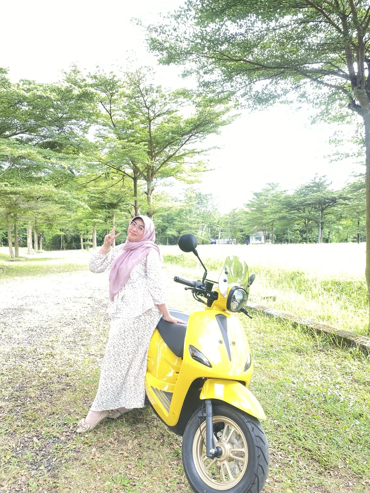

13 SEPTEMBER · UNTUK AMBAR PERMATASARI
بَارَكَ اللَّهُ فِي عُمْرِكِ
Selamat ulang
tahun, Ambar.
Semoga usiamu penuh berkah,
dan hatimu selalu punya alasan
untuk bersyukur.
Dengan tulus, untuk setiap langkahmu.

DARI HATI, MENJADI DOA
Untuk usia yang bertambah,
dan kebaikan yang terus tumbuh.
Barakallahu fii umrik, Ambar.
Di hari istimewamu ini, semoga Allah SWT senantiasa memberkahi usiamu, menjaga kesehatanmu, melapangkan rezekimu, dan menenangkan hatimu.
Semoga setiap doa yang kamu bisikkan dan setiap harapan baik yang kamu simpan dikabulkan pada waktu terbaik menurut-Nya. Semoga langkah yang terasa berat dimudahkan, dan usahamu dipertemukan dengan hasil yang membawa kebaikan.
Buka pesan selanjutnya
Tetaplah menjadi pribadi yang baik, tulus dalam menolong, dan rendah hati dalam setiap pencapaian. Semoga bertambahnya usia membuatmu semakin dekat kepada Allah, semakin bijaksana, dan semakin bermanfaat bagi orang-orang di sekitarmu.
Ketika suatu harapan belum terwujud, semoga Allah menguatkan kesabaranmu dan membimbingmu menuju yang lebih baik. Semoga kamu selalu dikelilingi orang-orang yang menyayangimu dengan tulus.
Semoga kebahagiaan menyertaimu di dunia dan akhirat.
Aamiin ya Rabbal ‘alamin.
HAL-HAL SEDERHANA, BEGITU BERHARGA
Sepotong kenangan.
Setiap foto menyimpan satu doa untukmu.
Tujuh foto, tujuh pesan dari hati.
Senyum untuk hari yang baru.
Di sela hari yang biasa.
Kebahagiaan yang sederhana.
Setiap langkah punya cerita.
Hari yang terasa hangat.
Sejenak menikmati hari.
Kenangan yang tetap tinggal.
DOA BAIK TAK BERHENTI DI HARI INI
Tetap baik.
Tetap rendah hati.
Tetap menjadi dirimu, Ambar.
Semoga Allah menjaga hatimu dan memberkahi
setiap babak baru dalam hidupmu.